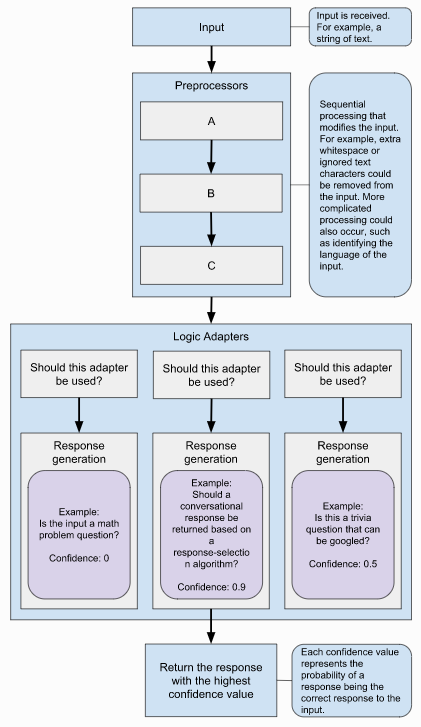

转载请注明来源：http://iceflameworm.github.io/2019/08/12/chatterbot-github/
框架简介
Chatterbot是一个完全用python编写的基于文本检索/匹配的聊天机器人框架，它会从保存的对话语料中找出与输入句子最匹配的句子，并把匹配到的句子的下一句作为回答返回。本文主要对其工作流程，以及核心的训练器和逻辑适配器进行梳理，具体使用方法，请参考其文档。
框架地址：https://github.com/gunthercox/ChatterBot
文档地址：https://chatterbot.readthedocs.io/en/stable/
工作流程

原文档中有两幅描述工作流程的示意图，一幅在文档首页，一幅在文档-逻辑适配器，个人认为后者描述的更全面、更恰当些，所以就以后者为准进行介绍。
从输入句子到输出响应回答，前后需要经历三大步：
- 预处理
- 生成答案
- 答案选择
具体流程请参考chatterbot.py。
预处理
与通常所讲的NLP预处理的目的基本一致，主要是文本进行一些标准还操作，比如去除连续的空格、删除特殊字符等等。Chatterbot框架自身实现了clean_whitespace, unescape_html和convert_to_ascii三种预处理功能。具体实现参见preprocessors.py
生成答案
一个Chatterbot实例可以绑定多个逻辑适配器，用于根据输入产生输出。
Chatterbot中没有独立的用于选择对话逻辑的意图识别模块，它将意图识别的功能放到了各个逻辑适配器中。接收到输入之后，Chatterbot会将其传递给各个逻辑适配器，由它们自己判断是否适合对输入的文本进行回答。如果逻辑适配器认为不能对输入进行回答，则会跳过，否则就输出回答，这样的话，有可能所有逻辑适配器都不输出回答，也有可能有多个逻辑适配器都给出了回答。具体请参考：ChatBot::generate_response方法。
从ChatBot::__init__中的以下两段代码
1 | self.storage = utils.initialize_class(storage_adapter, **kwargs) |
可知，所有的逻辑适配器都共享一份保存的对话语料。倘若逻辑适配器内部不对数据进行选择的话，所有的逻辑适配器都将从所有的对话语料数据中查找最匹配的回答。这样的结果就是，每个逻辑适配器在相同的数据上用不同的匹配方法或指标产生回答，衡量每个回答confidence的标准并不一致，这会影响后续根据confidence进行答案选择。
先写到这里，剩下的后面再写 ^_^。